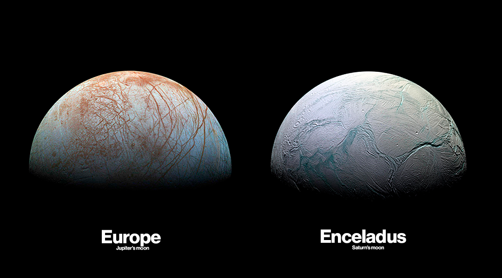

Capítulo 01: Génesis.
escrito por: uri o'callaghan /inspiredby magazine of arts and culture editor /09 min read
-Hay infinitas probabilidades de que exista vida más allá de la Tierra
-La Tierra no es el único mundo con océanos en el Sistema Solar
-La Tierra podría no ser el único mundo con vida en el propio Sistema Solar
He creído importante empezar este proyecto redactando una serie de artículos, divididos en capítulos, con el objetivo de reflexionar sobre el conjunto de ideas preestablecidas que tenemos sobre nosotros, tanto a nivel individual como colectivo. Hemos sido siempre el centro de todo. Evidentemente, esto no es así. En la gran mayoría de mapas que he estudiado, mi país siempre ha sido el del centro. Luego descubrí que, por sorpresa mía, otras personas en el mundo estudian mapas en que mi país está en la periferia y en el centro el suyo.
El origen de la ciencia moderna radica en la aceptación de que no tenemos ni idea de nada, que somos unos completos ignorantes y por ese motivo hay que echar por el suelo todas nuestras creencias anteriores. Solo así, dudando de todo, podremos empezar a pensar. Si los siguientes artículos consiguen que el lector se replantee una sola idea, ya habré conseguido mi propósito.
Un instante justo después del Big Bang, absolutamente todo cabía dentro de este círculo. Una millonésima de segundo después, el Universo era ya más grande que el actual Sistema Solar. Formamos parte de lo que una vez tuvo el tamaño de este círculo.1
El Universo nació hace 13.800 millones de años. Mucho tiempo después, hace unos 4.600 millones de años una gran nube de polvo y gas comenzó a unirse lentamente para crear el protosol que daría vida a nuestro Sistema Solar. El viento solar de nuestra joven estrella desplazó lejos del centro el material liviano que se encontraba en la nube de polvo, mientras que los materiales pesados como los metales se quedaron cerca de la estrella. Los materiales livianos que quedaron en menor medida cerca del Sol se evaporaron por las altas temperaturas. De aquí surgió un sistema solar de 8 planetas en que los cuatro más próximos al Sol, entre ellos la Tierra, son rocosos mientras que los cuatro más lejanos son gaseosos.2
Una vez formados los planetas, un conjunto de infinitas casualidades hizo que la vida en la Tierra surgiera hace 3.800 millones de años. Es muy probable que un proceso similar hubiera ocurrido en otras partes. Si el Universo es infinito, existen infinitas posibilidades de que haya vida más allá de nuestro planeta. Es posible que a usted le maraville tanto como a mí pensar que quizá no somos únicos en el Universo. Quizá la vida es incluso mucho más frecuente de lo que pensamos. De hecho, ni siquiera podemos afirmar con certeza que la Tierra es el único mundo con vida en el Sistema Solar.
Uno de los factores clave para el desarrollo de vida es la existencia de océanos. En 1492, Cristóbal Colón cruzó el océano Atlántico y descubrió vida más allá de donde las antiguas escrituras contemplaban. Puede parecer que no tiene demasiada relación con la vida extraterrestre, pero el hecho de cruzar océanos cambió todas nuestras ideas preestablecidas. Del mismo modo, el día que se descubra vida en otro planeta habrá que echar al suelo todo lo que siempre hemos creído e imprimir páginas en blanco para nuestros libros de historia. Como ocurrió en 1492, en el momento en que se confirme la existencia de nuevos mundos, empezará una carrera para rellenar los espacios vacíos de nuestros obsoletos mapas. Hay personas ansiosas por hacerse un hueco en la posteridad: si algo nos ha enseñado la historia es que a los exploradores se les concede la inmortalidad: Entre muchos lugares, llamamos Colombia a uno de los territorios del continente que descubrió Colón.3 La historia se caracteriza por tener comienzos claros pero no finales: el hito de Cristóbal Colón fue el detonante de una era de descubrimientos que aún tiene muchas páginas por escribir y muchos mares por navegar: la NASA afirma que el planeta Tierra no es el único mundo con océanos en el Sistema Solar.4
Creo que es oportuno repetir la frase: no somos el único mundo del Sistema Solar con océanos.4 De hecho solemos considerarnos los únicos que disponemos de agua pero en verdad es posible que seamos los raros entre los que la disponen: aparte de la Tierra, no hay otro planeta que disponga de océanos, sin embargo, la NASA sospecha que en al menos siete lunas del Sistema Solar podría haber océanos bajo su superficie.5
Lo único que nos hace especiales entre nuestros vecinos es que la Tierra es el único mundo en que el agua fluye abundantemente por encima de su superficie. En los otros cuerpos oceánicos del Sistema Solar solo encontraremos agua líquida de forma abundante por debajo de su superficie.
De confirmarse que, solo en una de ellas existe agua y que además habitan diminutas formas de vida, nos haría replantear absolutamente todo acerca de nuestra existencia. Las dos mayores candidatas a ocupar ese puesto son Europa, una de las lunas de Júpiter y Encélado, luna de su hermano gaseoso, Saturno.6 Creo que las dos imágenes que se muestran a continuación demuestran que ellas son dos de las más bonitas maravillas de nuestro Sistema Solar .

Tanto Europa como Encélado están recubiertas por una corteza de hielo, pero en su interior habría extensos océanos de agua. De hecho, la NASA expone que el océano de Europa sería el doble que el de todos los océanos terrestres.7 Aun así no nos centraremos en las características de las dos lunas, sino en reflexionar sobre las trascendentales consecuencias que llevaría el descubrimiento de microorganismos en ellas.
Si el asunto ya es por si solo interesante, la NASA, plenamente consciente del enorme peligro que supone llevar y traer de vuelta naves a estos mundos por una posible contaminación biológica, dispone de un protocolo de Protección Planetaria. Debido al potencial riesgo de que vida microbiana extraterrestre contamine las naves, tres cuerpos celestes de nuestro Sistema Solar tienen restringida las misiones de retorno a la Tierra: Marte, Europa y Encélado.8
"La Tierra no es el único mundo oceánico en nuestro sistema solar. El agua en otros mundos existe en diversas formas en lunas, planetas enanos e incluso cometas." -NASA 5
Respecto al origen de la posible vida microbiana de Encélado y Europa, es necesario preguntarnos si esta compartiría un origen común con nuestro planeta. La vida, o los elementos esenciales para su desarrollo, podrían haber viajado hace millones de años en trozos de roca terrestre o marciana (considerando la existencia de vida en Marte en un pasado lejano), lanzadas al espacio por impactos de cometas o asteroides, pero hay poca certeza de que, entre las pocas rocas que habrían llegado, sus hipotéticos microorganismos hubieran sobrevivido a distancias tan largas como la que hay entre la Tierra y Encélado.10 La hipótesis científica actual es que, en caso de existir vida, sería poco probable que tuviera un origen común con la de nuestro planeta. 10 De ser así, no solo sería una revolución en el campo de la ciencia, sino que comportaría una reflexión filosófica enorme, ya que requeriría reconsiderar toda nuestra existencia.
En 1511, Miguel Ángel pintó lo que sería uno de los cuadros más icónicos de nuestra historia, La Creación de Adán. Representa el origen del hombre según el relato bíblico del Génesis, en que Dios creó el mundo y dio vida al hombre. Quizá Miguel Ángel estaba equivocado. Si la vida en el Sistema Solar proviene de diferentes orígenes, no había un génesis, había muchos. La Tierra es solo una rama de un gran génesis, que quizá comparte origen con otros cuerpos celestes, pero que no presentaría ningún vínculo con la vida que se estaría desarrollando en estas lunas. En Encélado y Europa sólo se espera encontrar formas muy simples de vida, por lo que es improbable encontrar el equivalente a una Capilla Sixtina con bocetos de otro Miguel Ángel lunar. Aun así, nos confirmaría que nuestro relato no es el único, y que el Universo está potencialmente lleno de vida.
Anteriormente se ha citado al descubrimiento de Colón. El hecho es que representa un ejemplo muy útil en la búsqueda de vida extraterrestre ya que, a pesar de ser un evento histórico terrestre, es nuestro precedente de estudio que nos sirve para reflexionar sobre el choque entre dos mundos que hasta el momento habían desarrollado su historia sin conocerse el uno al otro.
Cuando Carl Sagan propuso en 1958 una legislación internacional para la protección planetaria, lo hacía, en parte, teniendo en cuenta los trágicos desenlaces de las exploraciones europeas siglos atrás.11
Sin querer, Colón demostró que la palabra "historia" se escribe en plural. Esto no gustó a Europa, que de inmediato hizo sus esfuerzos por reescribir a la fuerza los relatos y tradiciones de sus nuevos conocidos, sustituyendo tótems por cruces para hacerlos coincidir con los relatos europeos. Esta fue la manera en la que Europa se aseguró de que su historia siguiera siendo, a pesar de todo, la única.
Si el autoritarismo funciona para algo, solo funciona a corto término. El terror puede llegar a ser útil para callar personas, pero no ideas, de manera que solo puede ser efectivo temporalmente. Todas las masacres de indígenas y los regímenes de terror en las colonias europeas no sirvieron para tapar que en el fondo los relatos europeos habían dejado de tener sentido. A partir de entonces, y a pesar de muchos, los intelectuales europeos empezaron a dudar de absolutamente todos los dogmas y viejas creencias, y empezaron a entender que, quizá, las respuestas a todo no estaban en las sagradas escrituras. El origen de la ciencia reside en este mismo hecho. Empezar a dudar es lo que finalmente nos llevó al espacio.
En un futuro próximo, si se descubre vida en Encélado o Europa, es muy probable que no ocurra un choque de civilizaciones, pero de la misma manera que en 1492, hará falta volver a considerar que la historia se escribe en plural y no en singular.
He creído importante escribir el anterior capítulo con el objetivo de demostrar lo insignificantes que llegamos a ser en el contexto del Cosmos. Cualquier análisis requiere la anterior aceptación de que no somos nada y que nuestra vida no tiene mayor sentido del que le queramos dar. Para hacer un análisis de nuestra historia, primero hay que dejar atrás todas nuestras creencias y estar abiertos a que el conocimiento nos obligue a cambiarlas. El siguiente capítulo deja atrás el Universo y se centra en nuestra historia como seres humanos. Si hasta ahora gran parte del relato se ha centrado en hipótesis científicas que el futuro nos demostrará, ahora se centrará en hechos históricos que el pasado nos trae.

En Inspired By Magazine creemos en la libre circulación de ideas y por eso, nuestros artículos están disponibles para su republicación libre, con la única condición de citar a sus autores y notificarles la republicación. Para más información, oriolocallaghan@gmail.com
Compartir artículo en:
Fuentes:
01. GÉNESIS
1. European Space Agency (ESA). (2003). So, how did everything start?. European Space Agency (ESA).
2. National Geographic. 2018. El Sistema Solar - Atlas del cosmos. National Geographic, RBA Coleccionables. ISBN 978-84-473-9207-0
3. Himno Nacional de la República de Colombia
En la 2a estrofa, el propio himno de Colombia se refiere al país como "Tierra de Colón".4. NASA. Ocean Worlds
5. California Institute of Technology, Jet Propulsion Laboratory. Ocean Worlds. NASA
6. Wall. M. (2020). Alien-life hunters are eyeing icy ocean moons Europa and Enceladus. Space.
7. Solar System Exploration, NASA Science. Europa. NASA
8. Planetary Protection, NASA. Completed, Ongoing & Future Missions, NASA
9. Solar System Exploration, NASA. Europa, Jupiter Moons. NASA
10. Wall. M. (2020). If We Find Life on Europa or Enceladus, It Will Probably Be a '2nd Genesis', SPACE
11. Druyan, A. (2020). Cosmos: Mundos Posibles. Barcelona, España: National Geographic - RBA Libros.ISBN 9788482987408